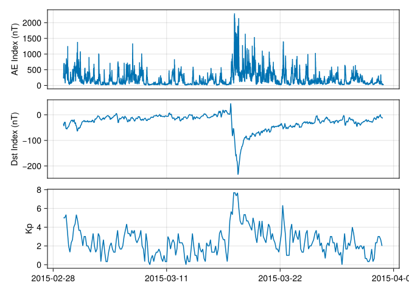
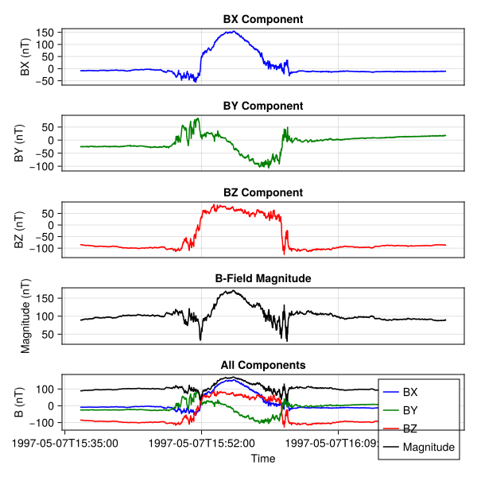
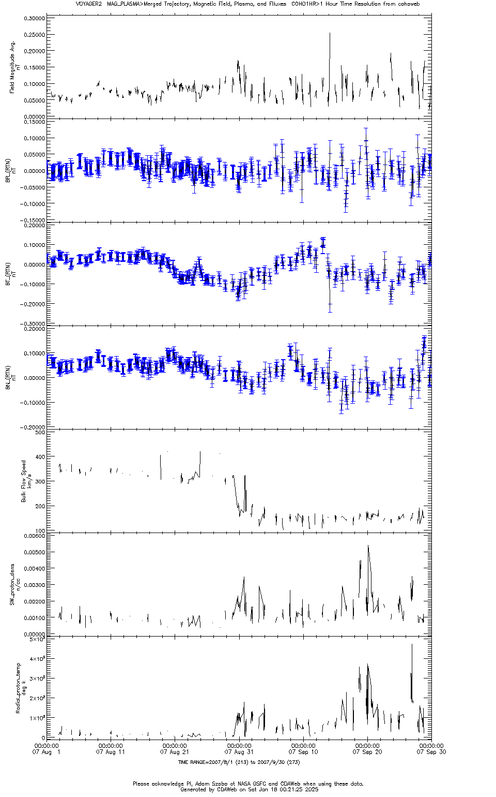
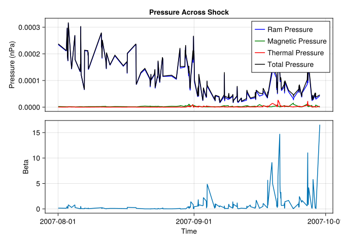

Obtain and plot the AE [1min resolution] and Dst [1hr resolution] indices directly from their official site, WDC-C in Kyoto, and Kp [3hr resolution] index from its official site, GFZ Potsdam, the entire month of March 2015.
Download ASCII and plot using your own tools which are not SPEDAS. Note it’s easier to download in IAGA-2002 format for AE and Dst and to use the ftp directory download for kp.
1.1 AE and Dst indices
[a] In a short paragraph explain: What is AE index, and Dst index, and how are they derived? How did you download and plot? Show some lines of the ascii data.
The AE index (Auroral Electrojet index) and Dst index (Disturbance Storm-Time index) are geomagnetic indices used to measure different aspects of Earth’s magnetic activity. The AE index quantifies the intensity of auroral electrojets, currents flowing in the auroral regions, and is derived from horizontal magnetic field variations measured by magnetometers distributed around the auroral zone. It provides insight into substorm activity and is calculated using the difference between maximum and minimum horizontal components recorded at these stations. The Dst index, on the other hand, measures the intensity of the ring current, a system of charged particles trapped in Earth’s magnetosphere. It is derived from the average horizontal magnetic field variations observed by low-latitude magnetometers. The Dst index is commonly used to assess geomagnetic storms, with negative values indicating stronger disturbances.
We use julia to download and plot the AE and Dst indices directly from their official site, WDC-C in Kyoto.
First we register and download the data dependencies using the DataDeps package.
Code
usingCairoMakieusingDataDepsusingCSV, DelimitedFilesusingTimeSeriesusingDataFramesusingDatesregister(DataDep("AE Index",""" Dataset: AE Index Website: https://wdc.kugi.kyoto-u.ac.jp/aeasy/index.html ""","https://wdc.kugi.kyoto-u.ac.jp///aeasy///wwwtmp/WWW_aeasy04087001.dat"))register(DataDep("Dst Index",""" Dataset: Dst Index Website: https://wdc.kugi.kyoto-u.ac.jp/dstae/index.html ""","https://wdc.kugi.kyoto-u.ac.jp///dstae///wwwtmp/WWW_dstae04096902.dat"))# Step 1: Download dataprintln("Downloading AE index data...")ae_file =readdir(datadep"AE Index", join=true)[1]println("Downloading Dst index data...")dst_file =readdir(datadep"Dst Index", join=true)[1]
┌ Warning: Over-writing registration of the datadep
│ name = "AE Index"
└ @ DataDeps ~/.julia/packages/DataDeps/Y2lje/src/registration.jl:15
┌ Warning: Over-writing registration of the datadep
│ name = "Dst Index"
└ @ DataDeps ~/.julia/packages/DataDeps/Y2lje/src/registration.jl:15
Downloading AE index data...
Downloading Dst index data...
In a second paragraph do the same as above but for Kp. What is Kp index? And how is it derived?
The Kp index is a global geomagnetic activity index that quantifies disturbances in Earth’s magnetic field caused by solar activity. Kp is calculated from the K values or the geomagnetic recordings of 13 mid-latitude geomagnetic observatories.
We use a web service client to load the data (https://kp.gfz-potsdam.de/en/data) from json format into the TimeArray.
Code
usingJSON3"""Download 'Kp', 'ap', 'Ap', 'Cp', 'C9', 'Hp30', 'Hp60', 'ap30', 'ap60', 'SN', 'Fobs' or 'Fadj' index data from kp.gfz-potsdam.de# Notes- 'start_time' and 'end_time': date format 'YYYY-MM-DDThh:mm:ss'"""functionload_Kp_data(start_time, end_time, index=:Kp) url ="https://kp.gfz-potsdam.de/app/json/?start=$(start_time)Z&end=$(end_time)Z&index=$(index)" data = JSON3.read(download(url)) datetime =DateTime.(data[:datetime], "yyyy-mm-ddTHH:MM:SSZ")TimeArray(datetime, Float64.(data[index]), [index], Dict("unit"=>"", "label"=>string(index)))endkp_data =load_Kp_data(start_time, end_time)
[c] Plot all 3 indices in a single plot with common time, UT in usual units [2015-03-01 00:00]. If you cannot plot in this format, simply plot in decimal day or decimal hour.
Code
f =tplot([ae_data.AE, dst_data, kp_data])

2 Galileo Magnetometer PDS
Obtain and plot the Galileo magnetometer flyby #8 data of Ganymede from the Planetary Data System (PDS). This is the NASA data repository of Planetary missions, the counterpart of SPDF (Space Physics Data Facility) used for Heliophysics missions. Note that planetary magnetospheric quantities are stored in both. UCLA is the central “node” for PDS with Prof. Walker the PI of that program. Use your own tools such as Excel (but not SPEDAS) to do this (you are welcome to use SPLASH if on Windows (download it from PDS)).
2.1 Coordinate system
In a short paragraph explain: What is the coordinate system and how did you download and plot?
Dataset about Galileo (https://pds-ppi.igpp.ucla.edu/mission/Galileo) flyby of Ganymede is available in the Planetary Data System (PDS) https://pds-ppi.igpp.ucla.edu/collection/urn:nasa:pds:galileo-mag-jup-calibrated:data-highres-ganymede (Kivelson 2024). Galileo calibrated MAG high-resolution magnetic field and trajectory data from the Ganymede 8 orbit Ganymede flyby cover 1997-05-07T15:36:00 to 1997-05-07T16:22:00.
The dataset contains data in the following coordinate systems:
System III [1965] (SYS3) coordinates https://pds-ppi.igpp.ucla.edu/item/urn:nasa:pds:galileo-mag-jup-calibrated:data-highres-ganymede:orb08_gan_sys3::1.0
The data is downloaded as CSV format, read and plot using Julia.
┌ Warning: Over-writing registration of the datadep
│ name = "ORB08_GAN_GPHIO"
└ @ DataDeps ~/.julia/packages/DataDeps/Y2lje/src/registration.jl:15
8187×8 DataFrame
8162 rows omitted
Row
SPACECRAFT EVENT TIME
BX
BY
BZ
B-FIELD MAGNITUDE
X
Y
Z
DateTime
Float64
Float64
Float64
Float64
Float64
Float64
Float64
1
1997-05-07T15:36:55.133
-8.36
-25.04
-85.24
89.23
-1.57456
-3.67635
0.6489
2
1997-05-07T15:36:55.467
-8.38
-25.16
-85.22
89.25
-1.57452
-3.67527
0.64893
3
1997-05-07T15:36:55.800
-8.41
-25.09
-85.24
89.25
-1.57448
-3.6742
0.64897
4
1997-05-07T15:36:56.133
-8.44
-25.08
-85.27
89.28
-1.57445
-3.67313
0.649
5
1997-05-07T15:36:56.467
-8.5
-25.16
-85.19
89.23
-1.57441
-3.67206
0.64904
6
1997-05-07T15:36:56.800
-8.47
-25.18
-85.18
89.23
-1.57437
-3.67098
0.64907
7
1997-05-07T15:36:57.133
-8.6
-25.2
-85.18
89.25
-1.57434
-3.66991
0.64911
8
1997-05-07T15:36:57.467
-8.47
-25.04
-85.12
89.13
-1.5743
-3.66884
0.64914
9
1997-05-07T15:36:57.800
-8.44
-25.04
-85.17
89.17
-1.57426
-3.66777
0.64918
10
1997-05-07T15:36:58.133
-8.41
-25.3
-85.06
89.14
-1.57423
-3.66669
0.64921
11
1997-05-07T15:36:58.467
-8.39
-25.27
-85.0
89.08
-1.57419
-3.66562
0.64925
12
1997-05-07T15:36:58.800
-8.37
-25.01
-85.09
89.09
-1.57415
-3.66455
0.64928
13
1997-05-07T15:36:59.133
-8.37
-24.98
-85.12
89.11
-1.57411
-3.66348
0.64932
⋮
⋮
⋮
⋮
⋮
⋮
⋮
⋮
⋮
8176
1997-05-07T16:22:20.132
-10.75
17.76
-86.47
88.93
-1.00607
5.14564
0.79636
8177
1997-05-07T16:22:20.465
-10.86
17.67
-86.62
89.06
-1.00598
5.1467
0.79637
8178
1997-05-07T16:22:20.799
-10.95
17.63
-86.69
89.14
-1.00589
5.14777
0.79637
8179
1997-05-07T16:22:21.132
-10.91
17.59
-86.88
89.32
-1.00579
5.14884
0.79638
8180
1997-05-07T16:22:21.465
-10.86
17.93
-86.6
89.1
-1.0057
5.1499
0.79638
8181
1997-05-07T16:22:21.799
-10.97
17.63
-86.44
88.9
-1.00561
5.15097
0.79639
8182
1997-05-07T16:22:22.132
-11.01
17.53
-86.46
88.9
-1.00551
5.15204
0.79639
8183
1997-05-07T16:22:22.465
-10.98
17.45
-86.38
88.81
-1.00542
5.1531
0.7964
8184
1997-05-07T16:22:22.799
-11.05
17.35
-86.41
88.82
-1.00533
5.15417
0.7964
8185
1997-05-07T16:22:23.132
-11.07
17.39
-86.42
88.84
-1.00523
5.15524
0.79641
8186
1997-05-07T16:22:23.465
-11.17
17.37
-86.27
88.71
-1.00514
5.1563
0.79641
8187
1997-05-07T16:22:23.465
-11.17
17.37
-86.27
88.71
-1.00514
5.1563
0.79641
2.2 Plot
Plot XYZ components and magnitude of the field in four panels. Use a 5th panel in the same plot to show all four traces with different colors, say: Blue, Green, Red, Black for X,Y,Z,T.
Code
# Create the plot with multiple panelsfig =Figure(; size=(600, 600))time = data."SPACECRAFT EVENT TIME"# Panel for BXax1 =Axis(fig[1, 1], title="BX Component", xlabel="Time", ylabel="BX (nT)")lines!(ax1, time, data[!, "BX"], color=:blue)# Panel for BYax2 =Axis(fig[2, 1], title="BY Component", xlabel="Time", ylabel="BY (nT)")lines!(ax2, time, data[!, "BY"], color=:green)# Panel for BZax3 =Axis(fig[3, 1], title="BZ Component", xlabel="Time", ylabel="BZ (nT)")lines!(ax3, time, data[!, "BZ"], color=:red)# Panel for B-FIELD MAGNITUDEax4 =Axis(fig[4, 1], title="B-Field Magnitude", xlabel="Time", ylabel="Magnitude (nT)")lines!(ax4, time, data[!, "B-FIELD MAGNITUDE"], color=:black)# Panel for all tracesax5 =Axis(fig[5, 1], title="All Components", xlabel="Time", ylabel="B (nT)")lines!(ax5, time, data[!, "BX"], color=:blue, label="BX")lines!(ax5, time, data[!, "BY"], color=:green, label="BY")lines!(ax5, time, data[!, "BZ"], color=:red, label="BZ")lines!(ax5, time, data[!, "B-FIELD MAGNITUDE"], color=:black, label="Magnitude")for ax in [ax1, ax2, ax3, ax4]hidexdecorations!(ax, grid=false)endlinkxaxes!(ax1, ax2, ax3, ax4, ax5)axislegend(ax5)fig

3 Voyager 2 Heliospheric termination shock
Voyager 2 crossed the Heliospheric termination shock and entered the heliosheath in Aug. 2007.
3.1 Plot and analysis
[a] Plot the shock crossing in CDAWeb using their own plotting resources. In particular plot the total and RTN components of the magnetic field, flow speed, proton density N, and temperature T. In a short paragraph explain: what is the RTN system and how did you create the plot? In a second paragraph explain if the changes in the above parameters are consistent with shock crossings.
The RTN (Radial-Tangential-Normal) coordinate system is a heliocentric coordinate system used to describe the position in relation to the Sun fixed at a spacecraft (or the planet): The R axis is directed radially away from the Sun, the T axis is the cross product of the solar rotation axis and the R axis, and the N axis is the cross product of R and T.

We utilize the combined COHOWeb dataset (VOYAGER2_COHO1HR_MERGED_MAG_PLASMA, https://cdaweb.gsfc.nasa.gov/misc/NotesV.html#VOYAGER2_COHO1HR_MERGED_MAG_PLASMA) (Ness et al. 2023). The plot was generated using “CDAWeb Data Explorer” by selecting the “Plot Data” option and choosing the appropriate data variable. We select time range from 2007/08/01 00:00:00.000 to 2007/09/30 00:00:00.000.
Around the end of August 31, we observe a significant decrease in bulk flow velocity accompanied by increases in proton density and temperature, corresponding to the shock crossing. Additionally, the magnetic field exhibits a slight increase. These changes are consistent with shock crossings, as shocks typically cause reductions in downstream flow velocity and simultaneous enhancements in plasma density, temperature, and magnetic field strength.
[b] What is the change in pressure, including dynamic pressure, across the shock (assume the crossing is along the shock normal)? To do this also ignore the electron thermal pressure (just use ion thermal pressure) and plot the quantity: N*V^2 + Pt, where Pt is the sum of magnetic and thermal pressures. Do this using your own tools (not SPEDAS) after downloading the data from SPDF.
┌ Warning: Over-writing registration of the datadep
│ name = "VOYAGER2_COHO1HR_MERGED_MAG_PLASMA"
└ @ DataDeps ~/.julia/packages/DataDeps/Y2lje/src/registration.jl:15

References
Kivelson, Khurana, M. G. 2022. “Galileo Jupiter MAG Highres Ganymede Data 1997-05-07.”
———. 2024. “Galileo Jupiter Magnetometer Highres Ganymede Data Collection.” NASA Planetary Data System. https://doi.org/10.17189/gch4-8w75.
Ness, Norman F., John D. Richardson, Leonard F. Burlaga, and Natalia E. Papitashvili. 2023. “Voyager 2 Hourly Merged Magnetic Field and Plasma Data.” NASA Space Physics Data Facility. https://doi.org/10.48322/VE5T-HF15.
Source Code
---title: Problem Set 1number-sections: trueengine: julia---## AE, Dst, Kp> Obtain and plot the AE [1min resolution] and Dst [1hr resolution] indices directly from their official site, WDC-C in Kyoto, and Kp [3hr resolution] index from its official site, GFZ Potsdam, the entire month of March 2015.> Download ASCII and plot using your own tools which are not SPEDAS. Note it’s easier to download in IAGA-2002 format for AE and Dst and to use the ftp directory download for kp.### AE and Dst indices> [a] In a short paragraph explain: What is AE index, and Dst index, and how are they derived? How did you download and plot? Show some lines of the ascii data.The AE index (Auroral Electrojet index) and Dst index (Disturbance Storm-Time index) are geomagnetic indices used to measure different aspects of Earth’s magnetic activity. The AE index quantifies the intensity of auroral electrojets, currents flowing in the auroral regions, and is derived from horizontal magnetic field variations measured by magnetometers distributed around the auroral zone. It provides insight into substorm activity and is calculated using the difference between maximum and minimum horizontal components recorded at these stations. The Dst index, on the other hand, measures the intensity of the ring current, a system of charged particles trapped in Earth’s magnetosphere. It is derived from the average horizontal magnetic field variations observed by low-latitude magnetometers. The Dst index is commonly used to assess geomagnetic storms, with negative values indicating stronger disturbances.We use julia to download and plot the AE and Dst indices directly from their official site, WDC-C in Kyoto. - https://wdc.kugi.kyoto-u.ac.jp/aeasy/index.html- https://wdc.kugi.kyoto-u.ac.jp/dstae/index.html / http://wdc.kugi.kyoto-u.ac.jp/dst_final/201503First we register and download the data dependencies using the `DataDeps` package.```{julia}using CairoMakieusing DataDepsusing CSV, DelimitedFilesusing TimeSeriesusing DataFramesusing Datesregister(DataDep("AE Index", """ Dataset: AE Index Website: https://wdc.kugi.kyoto-u.ac.jp/aeasy/index.html """, "https://wdc.kugi.kyoto-u.ac.jp///aeasy///wwwtmp/WWW_aeasy04087001.dat"))register(DataDep("Dst Index", """ Dataset: Dst Index Website: https://wdc.kugi.kyoto-u.ac.jp/dstae/index.html """, "https://wdc.kugi.kyoto-u.ac.jp///dstae///wwwtmp/WWW_dstae04096902.dat"))# Step 1: Download dataprintln("Downloading AE index data...")ae_file = readdir(datadep"AE Index", join=true)[1]println("Downloading Dst index data...")dst_file = readdir(datadep"Dst Index", join=true)[1]```The data is downloaded as text files in IAGA-2002 format. Sample data looks like this:```{txt}DATE TIME DOY AE AU AL AO |2015-03-01 00:00:00.000 060 245.00 122.00 -123.00 -1.002015-03-01 00:01:00.000 060 253.00 125.00 -128.00 -2.002015-03-01 00:02:00.000 060 235.00 122.00 -113.00 5.002015-03-01 00:03:00.000 060 225.00 120.00 -105.00 8.00``````{txt}DATE TIME DOY DST |2015-03-01 00:00:00.000 060 -34.002015-03-01 01:00:00.000 060 -44.002015-03-01 02:00:00.000 060 -30.002015-03-01 03:00:00.000 060 -31.00```We then parse the data into TimeSeries using `DelimitedFiles` and `TimeSeries`.```{julia}start_time = "2015-03-01T00:00:00"end_time = "2015-03-31T23:59:59"# Step 2: Parse AE datafunction load_ae_data(filename) meta = Dict( "unit" => "nT", "label" => "AE Index" ) # Skip the header lines (first 14 lines) data, header = readdlm(filename, skipstart=14, header=true) # Convert date and time columns to DateTime datetime = DateTime.(data[:, 1] .* "T" .* data[:, 2]) TimeArray(datetime, data[:, 4:7], header[4:7], meta)endfunction load_dst_data(filename) meta = Dict( "unit" => "nT", "label" => "Dst Index" ) # Skip the header lines (first 17 lines) data, header = readdlm(filename, skipstart=17, header=true) # Convert date and time columns to DateTime datetime = DateTime.(data[:, 1] .* "T" .* data[:, 2]) TimeArray(datetime, data[:, 4:4], header[4:4], meta)endprintln("Parsing AE data...")ae_data = load_ae_data(ae_file)println("Parsing Dst data...")dst_data = load_dst_data(dst_file)```Plot the data using CairoMakie.```{julia}Makie.convert_arguments(P::Type{<:Lines}, ta::TimeArray) = convert_arguments(P, timestamp(ta), values(ta))ylabel(ta::TimeArray) = meta(ta)["label"] * (isnothing(meta(ta)["unit"]) || meta(ta)["unit"] == "" ? "" : " (" * meta(ta)["unit"] * ")")function tplot(tas; linkxaxes=true, figure=(;), kwargs...) f = Figure(; figure...) axs = [] for (i, ta) in enumerate(tas) ax = Axis(f[i, 1]; ylabel=ylabel(ta)) for p in propertynames(ta) lines!(ax, getproperty(ta, p); label=p) end # Hide redundant x labels linkxaxes && i != length(tas) && hidexdecorations!(ax, grid=false) push!(axs, ax) end linkxaxes && linkxaxes!(axs...) fendf = tplot([ae_data.AE, dst_data])```### Kp index> In a second paragraph do the same as above but for Kp. What is Kp index? And how is it derived?The Kp index is a global geomagnetic activity index that quantifies disturbances in Earth’s magnetic field caused by solar activity. Kp is calculated from the K values or the geomagnetic recordings of 13 mid-latitude geomagnetic observatories.We use a web service client to load the data (https://kp.gfz-potsdam.de/en/data) from json format into the TimeArray.```{julia}using JSON3"""Download 'Kp', 'ap', 'Ap', 'Cp', 'C9', 'Hp30', 'Hp60', 'ap30', 'ap60', 'SN', 'Fobs' or 'Fadj' index data from kp.gfz-potsdam.de# Notes- 'start_time' and 'end_time': date format 'YYYY-MM-DDThh:mm:ss'"""function load_Kp_data(start_time, end_time, index=:Kp) url = "https://kp.gfz-potsdam.de/app/json/?start=$(start_time)Z&end=$(end_time)Z&index=$(index)" data = JSON3.read(download(url)) datetime = DateTime.(data[:datetime], "yyyy-mm-ddTHH:MM:SSZ") TimeArray(datetime, Float64.(data[index]), [index], Dict("unit" => "", "label" => string(index)))endkp_data = load_Kp_data(start_time, end_time)```### Plot> [c] Plot all 3 indices in a single plot with common time, UT in usual units [2015-03-01 00:00]. If you cannot plot in this format, simply plot in decimal day or decimal hour.```{julia}f = tplot([ae_data.AE, dst_data, kp_data])```## Galileo Magnetometer PDS> Obtain and plot the Galileo magnetometer flyby #8 data of Ganymede from the Planetary Data System (PDS). This is the NASA data repository of Planetary missions, the counterpart of SPDF (Space Physics Data Facility) used for Heliophysics missions. Note that planetary magnetospheric quantities are stored in both. UCLA is the central “node” for PDS with Prof. Walker the PI of that program. Use your own tools such as Excel (but not SPEDAS) to do this (you are welcome to use SPLASH if on Windows (download it from PDS)).### Coordinate system> In a short paragraph explain: What is the coordinate system and how did you download and plot?Dataset about Galileo (https://pds-ppi.igpp.ucla.edu/mission/Galileo) flyby of Ganymede is available in the Planetary Data System (PDS) https://pds-ppi.igpp.ucla.edu/collection/urn:nasa:pds:galileo-mag-jup-calibrated:data-highres-ganymede [@10.17189/gch4-8w75]. Galileo calibrated MAG high-resolution magnetic field and trajectory data from the Ganymede 8 orbit Ganymede flyby cover 1997-05-07T15:36:00 to 1997-05-07T16:22:00.The dataset contains data in the following coordinate systems:- Ganymede Phi-Omega (GPHIO) coordinates https://pds-ppi.igpp.ucla.edu/item/urn:nasa:pds:galileo-mag-jup-calibrated:data-highres-ganymede:orb08_gan_gphio::1.0 [@kivelsonGalileoJupiterMAG2022].- Ganymede-centered 'planetocentric' right-handed (GSPRH) coordinates https://pds-ppi.igpp.ucla.edu/item/urn:nasa:pds:galileo-mag-jup-calibrated:data-highres-ganymede:orb08_gan_gsprh::1.0- Despun Spacecraft (IRC) coordinates https://pds-ppi.igpp.ucla.edu/item/urn:nasa:pds:galileo-mag-jup-calibrated:data-highres-ganymede:orb08_gan_irc::1.0- System III [1965] (SYS3) coordinates https://pds-ppi.igpp.ucla.edu/item/urn:nasa:pds:galileo-mag-jup-calibrated:data-highres-ganymede:orb08_gan_sys3::1.0The data is downloaded as CSV format, read and plot using Julia.```{julia}register(DataDep("ORB08_GAN_GPHIO", """ Dataset: ORB08_GAN_GPHIO Website: https://pds-ppi.igpp.ucla.edu/mission/Galileo """, "https://pds-ppi.igpp.ucla.edu/ditdos/write?id=urn:nasa:pds:galileo-mag-jup-calibrated:data-highres-ganymede:orb08_gan_gphio::1.0&f=csv"))GAN_file = readdir(datadep"ORB08_GAN_GPHIO", join=true)[1]data = CSV.File(GAN_file) |> DataFrame```### Plot> Plot XYZ components and magnitude of the field in four panels. Use a 5th panel in the same plot to show all four traces with different colors, say: Blue, Green, Red, Black for X,Y,Z,T.```{julia}# Create the plot with multiple panelsfig = Figure(; size=(600, 600))time = data."SPACECRAFT EVENT TIME"# Panel for BXax1 = Axis(fig[1, 1], title="BX Component", xlabel="Time", ylabel="BX (nT)")lines!(ax1, time, data[!, "BX"], color=:blue)# Panel for BYax2 = Axis(fig[2, 1], title="BY Component", xlabel="Time", ylabel="BY (nT)")lines!(ax2, time, data[!, "BY"], color=:green)# Panel for BZax3 = Axis(fig[3, 1], title="BZ Component", xlabel="Time", ylabel="BZ (nT)")lines!(ax3, time, data[!, "BZ"], color=:red)# Panel for B-FIELD MAGNITUDEax4 = Axis(fig[4, 1], title="B-Field Magnitude", xlabel="Time", ylabel="Magnitude (nT)")lines!(ax4, time, data[!, "B-FIELD MAGNITUDE"], color=:black)# Panel for all tracesax5 = Axis(fig[5, 1], title="All Components", xlabel="Time", ylabel="B (nT)")lines!(ax5, time, data[!, "BX"], color=:blue, label="BX")lines!(ax5, time, data[!, "BY"], color=:green, label="BY")lines!(ax5, time, data[!, "BZ"], color=:red, label="BZ")lines!(ax5, time, data[!, "B-FIELD MAGNITUDE"], color=:black, label="Magnitude")for ax in [ax1, ax2, ax3, ax4] hidexdecorations!(ax, grid=false)endlinkxaxes!(ax1, ax2, ax3, ax4, ax5)axislegend(ax5)fig```## Voyager 2 Heliospheric termination shock> Voyager 2 crossed the Heliospheric termination shock and entered the heliosheath in Aug. 2007.### Plot and analysis> [a] Plot the shock crossing in CDAWeb using their own plotting resources. In particular plot the total and RTN components of the magnetic field, flow speed, proton density N, and temperature T. In a short paragraph explain: what is the RTN system and how did you create the plot? In a second paragraph explain if the changes in the above parameters are consistent with shock crossings.The RTN (Radial-Tangential-Normal) coordinate system is a heliocentric coordinate system used to describe the position in relation to the Sun fixed at a spacecraft (or the planet): The R axis is directed radially away from the Sun, the T axis is the cross product of the solar rotation axis and the R axis, and the N axis is the cross product of R and T. {width=63%}We utilize the combined COHOWeb dataset (VOYAGER2_COHO1HR_MERGED_MAG_PLASMA, https://cdaweb.gsfc.nasa.gov/misc/NotesV.html#VOYAGER2_COHO1HR_MERGED_MAG_PLASMA) [@nessVoyager2Hourly2023]. The plot was generated using "CDAWeb Data Explorer" by selecting the “Plot Data” option and choosing the appropriate data variable. We select time range from 2007/08/01 00:00:00.000 to 2007/09/30 00:00:00.000.Around the end of August 31, we observe a significant decrease in bulk flow velocity accompanied by increases in proton density and temperature, corresponding to the shock crossing. Additionally, the magnetic field exhibits a slight increase. These changes are consistent with shock crossings, as shocks typically cause reductions in downstream flow velocity and simultaneous enhancements in plasma density, temperature, and magnetic field strength.> [b] What is the change in pressure, including dynamic pressure, across the shock (assume the crossing is along the shock normal)? To do this also ignore the electron thermal pressure (just use ion thermal pressure) and plot the quantity: N*V^2 + Pt, where Pt is the sum of magnetic and thermal pressures. Do this using your own tools (not SPEDAS) after downloading the data from SPDF.```{julia}using Unitfulusing Unitful: μ0, k, mpregister(DataDep("VOYAGER2_COHO1HR_MERGED_MAG_PLASMA", """ Dataset: VOYAGER2_COHO1HR_MERGED_MAG_PLASMA Website: https://cdaweb.gsfc.nasa.gov/misc/NotesV.html#VOYAGER2_COHO1HR_MERGED_MAG_PLASMA """, "https://cdaweb.gsfc.nasa.gov/tmp/cweb_B6vad1PhkF/VOYAGER2_COHO1HR_MERGED_MAG_PLASMA_1663093.csv"))# Read the CSV fileVIM_file = readdir(datadep"VOYAGER2_COHO1HR_MERGED_MAG_PLASMA", join=true)[1]data = CSV.File(VIM_file; comment="#") |> DataFrameallowmissing!(data)data[!, "time"] = DateTime.(data."EPOCH_yyyy-mm-ddThh:mm:ss.sssZ", "yyyy-mm-ddTHH:MM:SS.sssZ")for c ∈ eachcol(data) replace!(c, -1.0e31 => missing)enddropmissing!(data)N = data[!, "SW_PROTON_DENS_n/cc"] * u"cm^-3"V = data[!, "BULK_FLOW_SPEED_km/s"] * u"km/s"B = data[!, "FIELD_MAGNITUDE_AVG._nT"] * u"nT"T = data[!, "RADIAL_PROTON_TEMP_deg_k"] * u"K"# Calculate the pressurepB = B .^ 2 / μ0 / 2 ./ 1u"nPa" .|> NoUnitspT = k * N .* T ./ u"nPa" .|> NoUnitspRam = mp * N .* V .^ 2 ./ u"nPa" .|> NoUnitspressure = pRam .+ pB .+ pTbeta = pT ./ pBtime = data."time"# Plot the datafig = Figure()ax = Axis(fig[1, 1], title="Pressure Across Shock", xlabel="Time", ylabel="Pressure (nPa)")lines!(time, pRam, color=:blue, label="Ram Pressure")lines!(time, pB, color=:green, label="Magnetic Pressure")lines!(time, pT, color=:red, label="Thermal Pressure")lines!(time, pressure, color=:black, label="Total Pressure")axislegend(ax)ax2 = Axis(fig[2, 1], xlabel="Time", ylabel="Beta")lines!(time, beta)hidexdecorations!(ax, grid=false)fig```